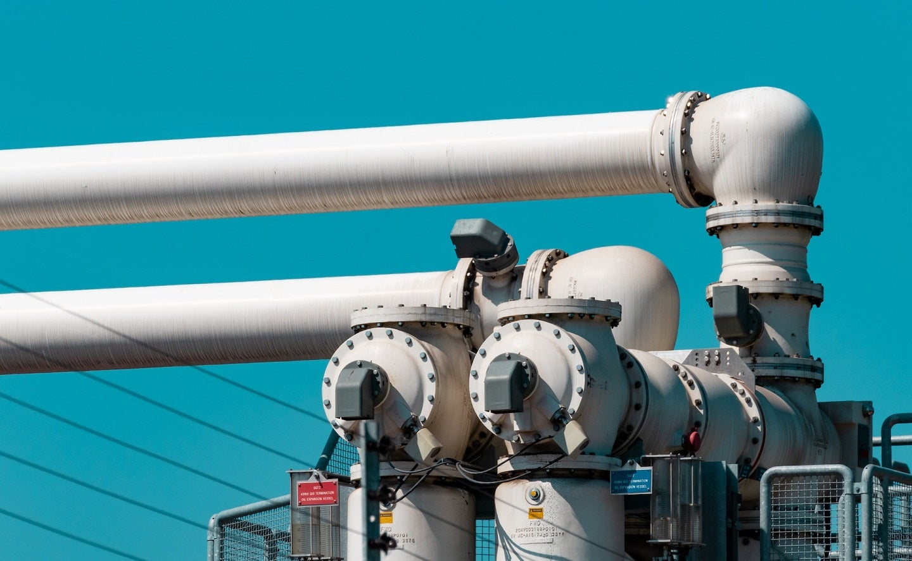

Pakistan Signs TAPI Pipeline Plan with Turkmenistan - A Milestone Achievement
Image Credits https://www.offshore-technology.com/news/pakistan-tapi-implementation-turkmenistan/
Once upon a time, Pakistan was facing a severe energy crisis. People were experiencing prolonged power outages, and the economy was suffering due to the energy shortage. However, Pakistan took various measures to overcome the crisis, one of which was the TAPI pipeline project.
TAPI stands for Turkmenistan-Afghanistan-Pakistan-India. It is a planned natural gas pipeline project that will transport up to 33 billion cubic meters (bcm) of natural gas annually from Turkmenistan to Afghanistan, Pakistan, and India. The idea of this project was first proposed back in the 1990s, but due to various reasons, it was delayed for a long time. Finally, on 30th August 2021, Pakistan signed a joint implementation plan with Turkmenistan to execute the TAPI pipeline project, which is undoubtedly a milestone achievement for Pakistan.
Case Studies
Let's take a look at some case studies of how similar energy projects have helped other countries:
Germany's Nord Stream Pipeline Project
Germany is heavily reliant on natural gas imports from Russia, and the Nord Stream pipeline project has helped Germany to diversify its energy sources. The project has significantly increased the reliability of gas supplies to Germany, which has had a positive impact on the country's economy.
Tanzania's Natural Gas Pipeline Project
Tanzania started a natural gas pipeline project back in 2015, and it has helped the country to increase its access to electricity. Tanzanian households now have better access to electricity, and various industries have significantly benefitted from the reliable supply of energy.
Conclusion
The TAPI pipeline project is undoubtedly a milestone achievement for Pakistan, and it will have various benefits for the country's economy and energy sector. The project will help Pakistan to diversify its energy sources and reduce its reliance on expensive fossil fuels. It will also create job opportunities and enhance the country's infrastructure. Finally, the successful execution of this project will act as a positive sign for other foreign investors to invest in Pakistan's energy sector, which will pave the way for achieving the country's ambitious energy goals.
Curated by Team Akash.Mittal.Blog
Share on Twitter Share on LinkedIn